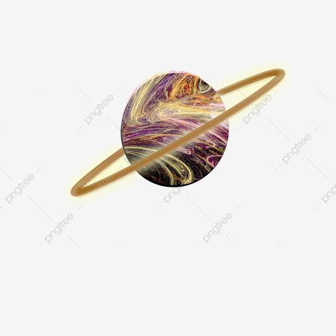

Surveying can be defined as science, art of taking measurement of relative position of points on, above, beneath the earth
surface and plotting of this measurement to a suitable scale to form a map , chart .

Astronomy
Astronomy is the scientific study of the heavenly bodies such as stars, sun, earth and the moon. Astronomy can also be refers
to the study of science of the physical universe.
Mountain
A Mountain is a large landform that rises above the surrounding land in a limited area, usually in the form of a peak.Mountains
are formed through tectonic forces or volcanism.These forces can locally raise the surface of the earth.
Total Station
A total Stationis an electroninc instrument used for surveying and building construction. It can measure both vertical and
horizontal angles and the slope distance from the instrument to a particular point.